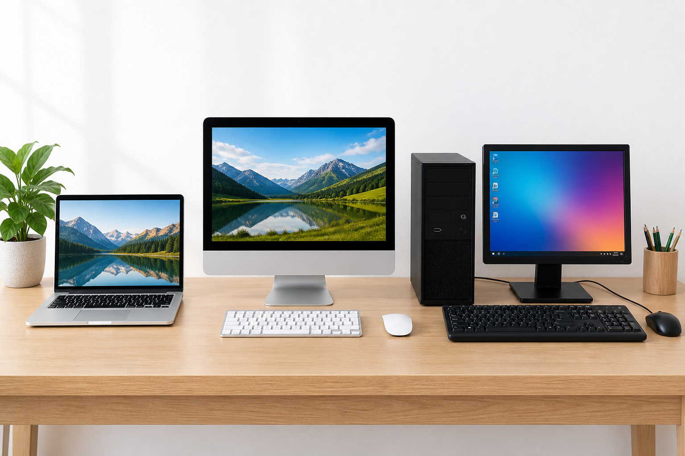
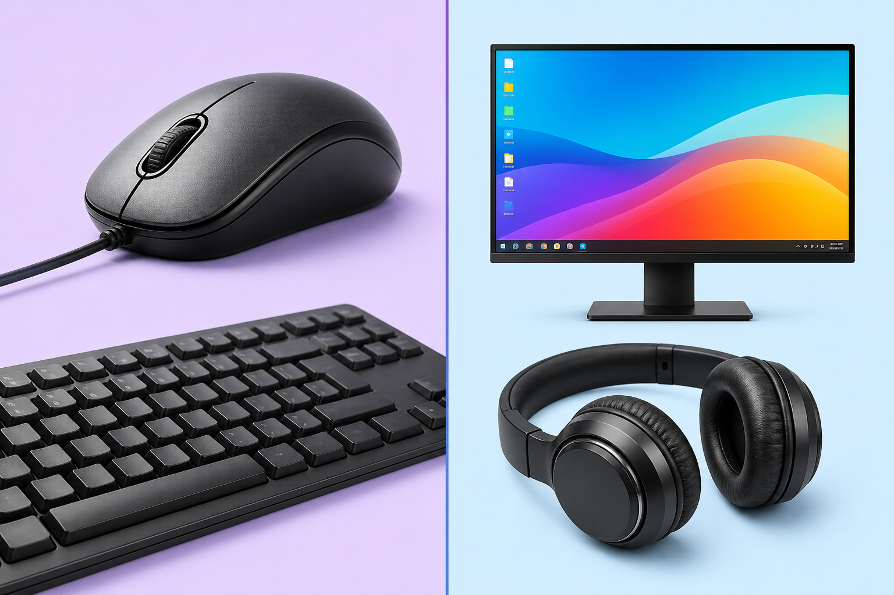
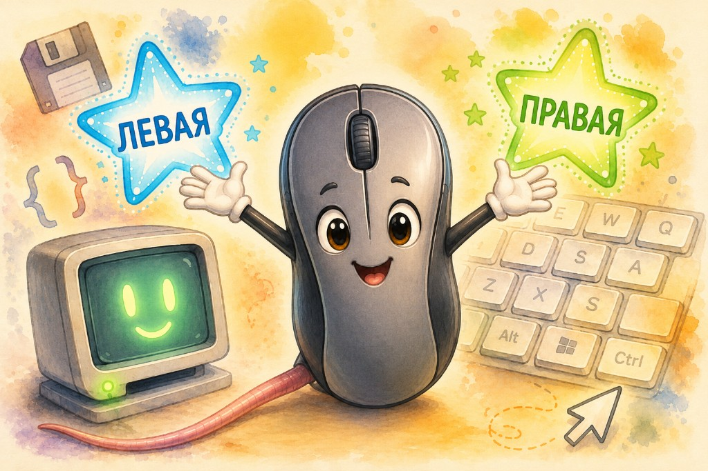
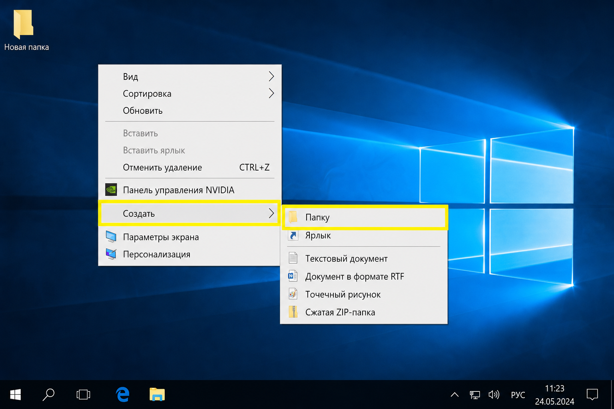
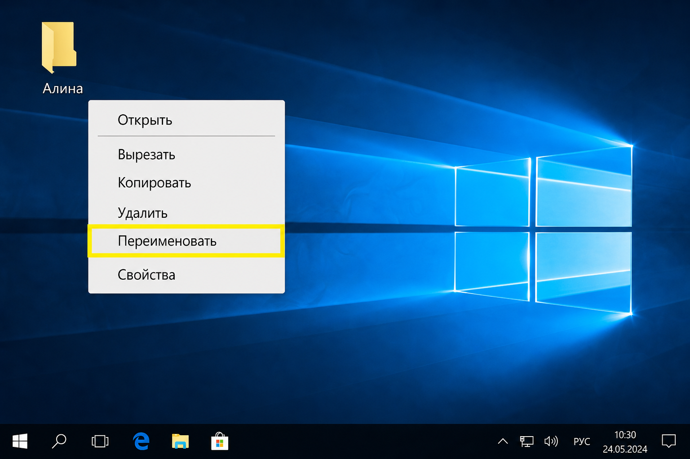
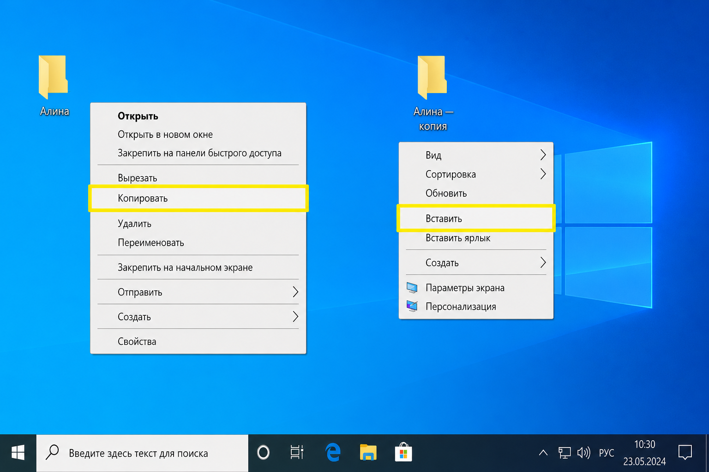
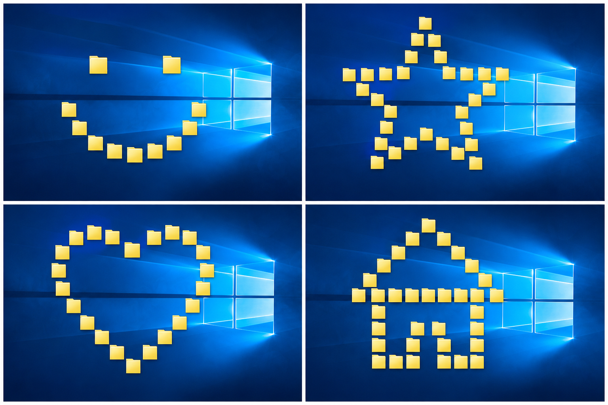
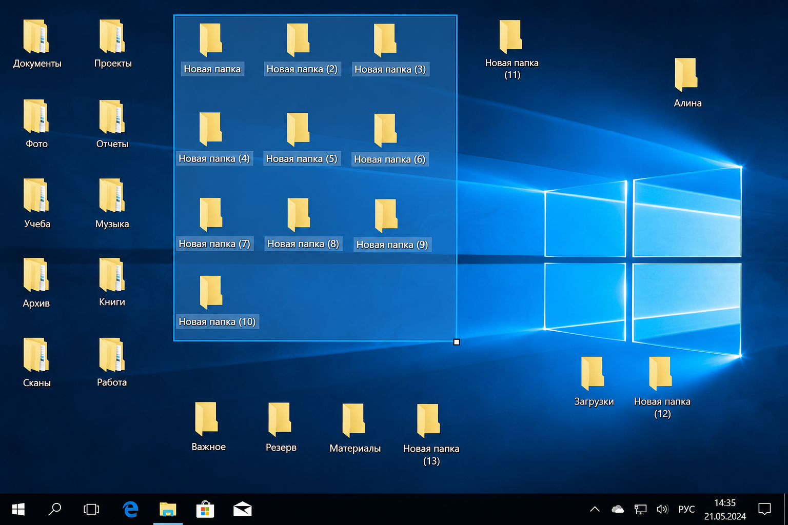
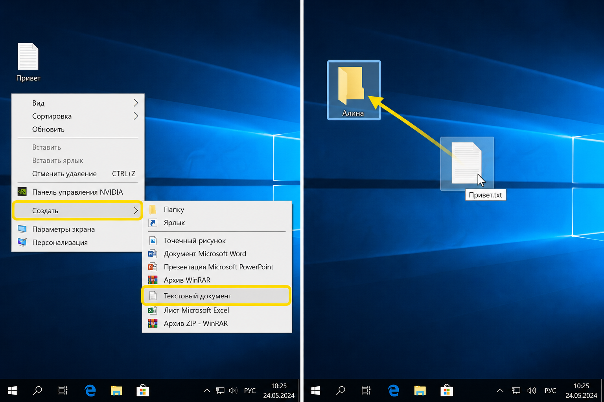

IT Camp
Первые шаги в IT
Занятие 1
Знакомство с компьютером
Сегодня узнаем, что умеет компьютер, подружимся с мышью и устроим рабочий стол: папка, фигуры из копий и первый файл внутри.
Цель занятия
К концу урока ты отличишь ввод от вывода, создашь папку, скопируешь объекты мышью и положишь текстовый документ в свой «сундук».
Какие бывают компьютеры?
Ноутбук, моноблок и настольный ПК выглядят по-разному — но это всё компьютеры.
Компьютер помогает работать с информацией: картинками, звуком, текстом, играми и сообщениями.

Ноутбук, моноблок и настольный ПК — всё это компьютеры
Игра: ввод или вывод?
Устройства ввода кладут информацию в компьютер. Устройства вывода показывают или проигрывают результат.
Нажми правильный ответ для каждого предмета.
1. Клавиатура
2. Монитор
3. Мышь
4. Колонки / наушники
5. Микрофон
Короткая шпаргалка
Ввод
Клавиатура, мышь, микрофон, веб-камера, сканер, геймпад.
Вывод
Монитор, колонки, наушники, принтер.

Слева — ввод, справа — вывод
Где левая, где правая?
Сначала подними левую руку, потом правую. На картинке у мыши стороны подписаны на звёздах — так проще запомнить.

Запомни: левая и правая — это про твои руки. Так же устроены кнопки мыши.
Практика: дружим с мышью
Возьми мышь. Поводи ею по столу — на экране двигается стрелка. Это курсор.
Левая кнопка
Главная команда: выбрать, открыть (двойной клик), перетащить.
Правая кнопка
Спросить компьютер: «Что можно сделать?» — появится меню.
Делаем папку для работ
Папка — как «сундук» для файлов. Создадим её на рабочем столе.
-
1
Щёлкни правой кнопкой по пустому месту на рабочем столе.
-
2
Выбери Создать → Папку.
-
3
Назови папку своим именем, например: Алина. Если буквы не те — справа внизу переключи язык (РУС / ENG).
-
4
Кликни по пустому месту стола — имя сохранится.

Переименуем папку
Правой кнопкой по папке → Переименовать → напиши новое имя → клик по пустому месту.
Быстрый способ: один медленный клик по имени или клавиша F2.

Копируем и двигаем
Копировать — сделать точную копию. Компьютер «запоминает» объект, а потом мы его вставляем.
-
1
Правой кнопкой по своей папке → Копировать.
-
2
Правой кнопкой по пустому месту стола → Вставить. Появится «… — копия».
-
3
Зажми папку левой кнопкой и не отпускай — так её можно перетаскивать.

Миссия: фигура из папок
Скопируй папку несколько раз и расставь копии на рабочем столе так, чтобы получилась фигура. Выбери одну идею — или придумай свою!
😊
Смайлик
Два глаза, щёчки и дуга рта
⭐
Звездочка
Центр и пять лучей вокруг
❤️
Сердце
Два бугорка сверху и остриё снизу
🏠
Домик
Квадрат снизу и треугольная крыша
-
1
Копируй и вставляй, пока не хватит «деталей».
-
2
Перетащи папки мышкой — собери фигуру на рабочем столе.
-
3
Покажи соседу, что получилось!

Примеры: смайлик, звёздочка, сердце и домик — собери любую фигуру из папок
Убираем лишнее рамочкой
Удалять по одной папке долго. Можно выделить сразу много.
-
1
Зажми левую кнопку в углу стола и тяни мышь — появится синяя рамочка.
-
2
«Поймай» все лишние копии (свою основную папку оставь снаружи).
-
3
Правой кнопкой по выделенному → Удалить.
Рамочкой можно не только удалять — так же копируют и открывают сразу несколько объектов.

Первый файл в папку
В папках хранят разные файлы. Создадим текстовый документ и положим его внутрь.
-
1
Правой кнопкой по столу → Создать → Текстовый документ.
-
2
Назови его, например: Привет.
-
3
Зажми документ левой кнопкой и перетащи прямо на свою папку — он «запрыгнет» внутрь.
-
4
Открой папку двойным кликом левой кнопкой и проверь: файл на месте?

Правила безопасности
- Не оставляй компьютер включённым без дела.
- Выключай через меню «Пуск» (разберём на следующем занятии).
- Не ешь и не пей за компьютером — опасно для техники.
- Не ставь программы без разрешения преподавателя.